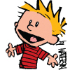
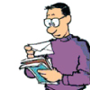
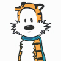
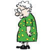
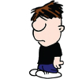
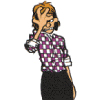
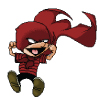
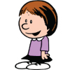
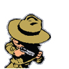

- 
- 
- 
- 
- 
- 


- 
- 
- 
Calvin is a fictional character, and is the title character of the comic strip Calvin and Hobbes by Bill Watterson. Calvin demonstrates a level of wisdom, vocabulary and humor unusual for a six year-old boy. However, in many ways he is typical for his age: he absolutely hates baths, and fears and hates his babysitter, refuses to go to school, frequently disobeys his parents, and is lazy and selfish. Calvin frequently loses himself in various fantastical worlds of his own imagining. On the rare occasions on which he applies himself, Calvin's projects in school are very well received, to his confusion or indifference. He shows relatively minor interest or success in interacting with any "real" characters, choosing instead to spend the majority of his time with Hobbes, with whom he frequently embarks on imaginary adventures, debates philosophical issues, plots various pranks against girls, and fights.
Calvin's father is a patent attorney, portrayed to the reader as an upstanding middle-class father despite how his son may see him. An outdoorsman, he enjoys bike rides and camping trips, sometimes in extreme weather and insists that these activities, like Calvin's chores, "build character". Though his age is never specified, when Calvin offers him a bowl of chocolate cereal, he replies "No thanks, I'm trying to reach middle age."
Hobbes is seen in two differentiating perspectives. Calvin perceives him as a live tiger and a best friend. To everybody else, he's a stuffed tiger. Hobbes is often shown to be smarter and wiser than Calvin when he is perceived as a real tiger. He is seen reading more often than his owner and tries to be the voice of reason when Calvin tries to perform a risky stunt or engage in a dubious scheme. Hobbes' advice mostly has no effect on Calvin, who usually ignores Hobbes's reasoning and winds up getting in trouble for his actions. Because of this, some fans say that Hobbes represents Calvin's conscience. However, Hobbes is shown to be terrible at math, quite possibly worse than Calvin himself.
Miss Wormwood is Calvin's schoolteacher, named after the junior devil in C. S. Lewis' The Screwtape Letters. She usually wears polka-dotted dresses, and serves as a foil to Calvin's mischief. Despite a large progression of time in the Calvin and Hobbes Universe (10 years), mainly exhibited by the changing seasons, every character seems to remain exactly the same age, with the exception of Susie. As a result, Calvin and Susie return to Miss Wormwood's first-grade class every fall. (Watterson has explained that comic-strip characters typically do not age.)
Moe is the stereotypical bully character, and one of the primary villains, along with Rosalyn and the Monsters under the Bed. His (frequently monosyllabic) dialogue is shown in crude, lower-case letters (probably the most intellectual words Moe has ever used are "asphalt" "spatula", and "skin grafts"). Watterson describes Moe as "every jerk I've ever met " and reflects his memory of "school being full of idiots like Moe." . Moe is the only minor character in the strip who hurts Calvin without being provoked, and is also the only significant character never portrayed with sympathy. Moe steals Calvin's toy truck by threatening to punch him, and when Calvin demands it be returned, taunts Calvin to a "fight" over it. Calvin is disgusted by Moe's lack of conscience and angrily tells him off "You're the one who has to live with yourself! I can't make you do what's right! You can HAVE the stupid truck!" To which Moe coldly responds "Ok, thanks! Heh. Heh."
Calvin's mother is a stay-at-home mom who is frequently exasperated by Calvin's antics. Before Calvin's birth, she worked a stressful job filled with aggravation, which Calvin's father claims is the reason she was better prepared to stay at home and raise Calvin. Whether or not he was jesting is debatable. On the rare occasions when she is not reacting to Calvin's misbehavior, she seems to enjoy quiet activities, such as gardening and reading. She is frequently the one forced to curb Calvin's destructive tendencies; in one Sunday strip, she allows Calvin to smoke a cigarette in order to teach him how unpleasant smoking can be. She also usually seems sympathetic towards her son's relationship with Hobbes, and a few times has found herself speaking to Hobbes as well, though this embarrasses her. She has even called out to Hobbes once the same way Calvin did when she was looking for him, perhaps implying that, like her husband, Calvin's mother also has her own moments of playful imagination, despite generally being a straight-laced adult.
Rosalyn is a high school senior and the only babysitter able to tolerate Calvin's antics. Calvin is often terrified of her; but in the final Rosalyn story, their opposition is averted by a game of Calvinball, which Rosalyn wins (this makes Rosalyn the only character in the strip to have a conclusive story arc). In nearly all the "Rosalyn stories", Rosalyn is shown demanding advance payment and raises in wage from Calvin's parents, supposedly to pay for college or for the hard work necessary to control Calvin. (For the same reason, she briefly appears as Calvin's swimming instructor.) In at least four stories, Rosalyn telephones her boyfriend, Charlie, to cancel prearranged meetings which she cannot fulfill. (Charlie remains an unseen character.) Calvin sometimes urges Charlie to stop courting Rosalyn, on grounds that Rosalyn is sadistic and/or insane. Rosalyn is one of the only two major characters with no role in a Spaceman Spiff strip; the other being Hobbes.
Spaceman Spiff, "interplanetary explorer extraordinaire," explores the outermost reaches of the universe "by popular request" in a red flying saucer with a bubble canopy (resembling a UFO). As the comic developed and evolved over time, Watterson began to introduce Spiff's adventures with alliteration, featuring phrases such as, "Poised precariously over a percolating pit of putrid pasta." The galaxy in which Spiff travels is a cruel place where Spiff is shot down or captured by ferocious and disgusting aliens. In reality, these aliens are often people such as Calvin's parents or Miss Wormwood. Frequently, Spaceman Spiff becomes stranded on an unexplored planet due to alien attacks or malfunctioning equipment. Most of these planets seem devoid of civilization, and often have hostile environments or alien predators. Watterson based his alien landscapes on the rock formations of southern Utah and landscapes within the comic Krazy Kat. Gradually, the monsters became more detailed.
Stupendous Man is a superhero Calvin often becomes. He, like Spaceman Spiff, narrates his own adventures in the third person. Stupendous Man has several nemeses: Mom Lady (Calvin's Mom), Babysitter Girl (Rosalyn), Annoying Girl (Susie Derkins), and the Crab Teacher (Miss Wormwood). Despite his frequent use of various "stupendous powers", Stupendous Man has admittedly only won "moral victories". In one strip, Stupendous Man had a battlecry, in which every letter that makes up the word stupendous, stood for something—a parody of Captain Marvel's magic word, "Shazam." This had limited success.
Susie Derkins is a classmate of Calvin who lives in his neighborhood. She is the only recurring character in the comic strip to have both a forename and a surname revealed (other characters are mentioned briefly). She is also the only character who aged in the strip. Named after Watterson's in-laws' family beagle, she first appeared early in the strip as a new student in Calvin's class, but in later strips speaks as a longtime neighbor. In contrast to Calvin, she is polite and diligent in her studies, and her imagination usually seems mild-mannered and civilized, consisting of games such as playing "house" or having tea parties with her stuffed animals. Her parents have spoken in the strip several times, but it is never confirmed that they appear.
Tracer Bullet is a hard-boiled private investigator styled after film noir and detective fiction stereotypes, such as Sam Spade of The Maltese Falcon or Philip Marlowe, who spouts incisive metaphors and wears a trench coat and fedora. He resembles Calvin, though the Frank Miller-like high-contrast art style Watterson uses in the Tracer Bullet strips obscures Bullet's features. Watterson considered this style dramatic but regarded it as time-consuming, and that the human eye has to work hard to study predominantly dark spaces, so he drew few Tracer Bullet strips. There have been only three strip sequences that involved Tracer Bullet. Tracer Bullet owns at least three guns: a .38 revolver, a .44 Magnum and a .45 handgun.